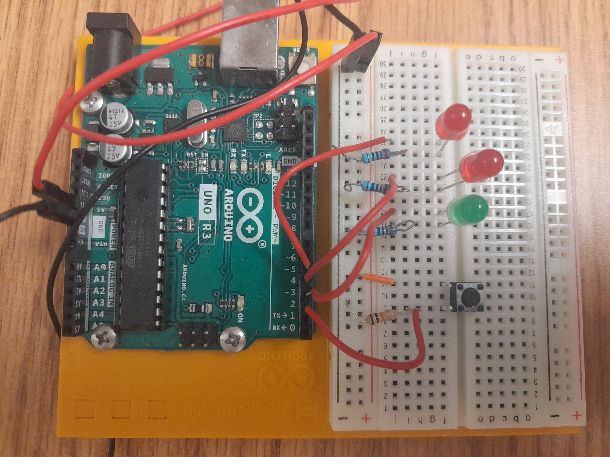
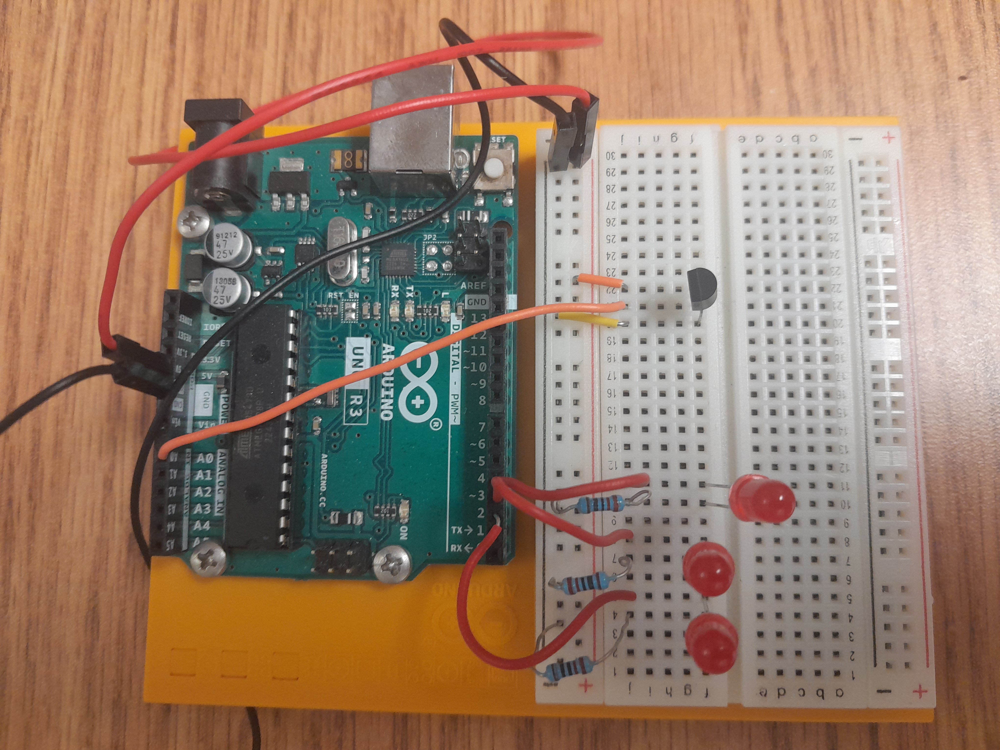
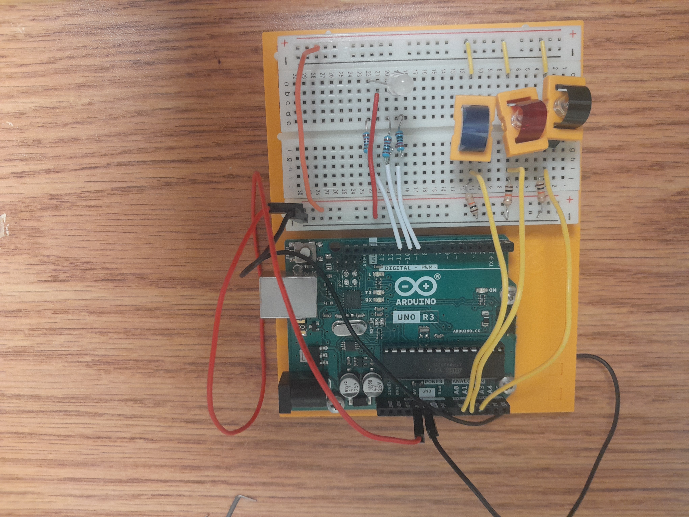
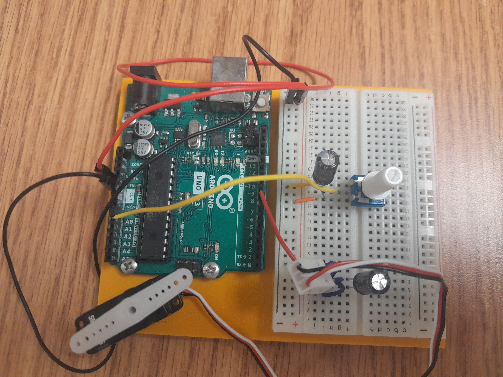
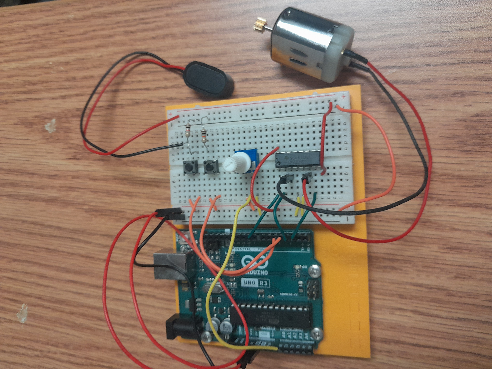
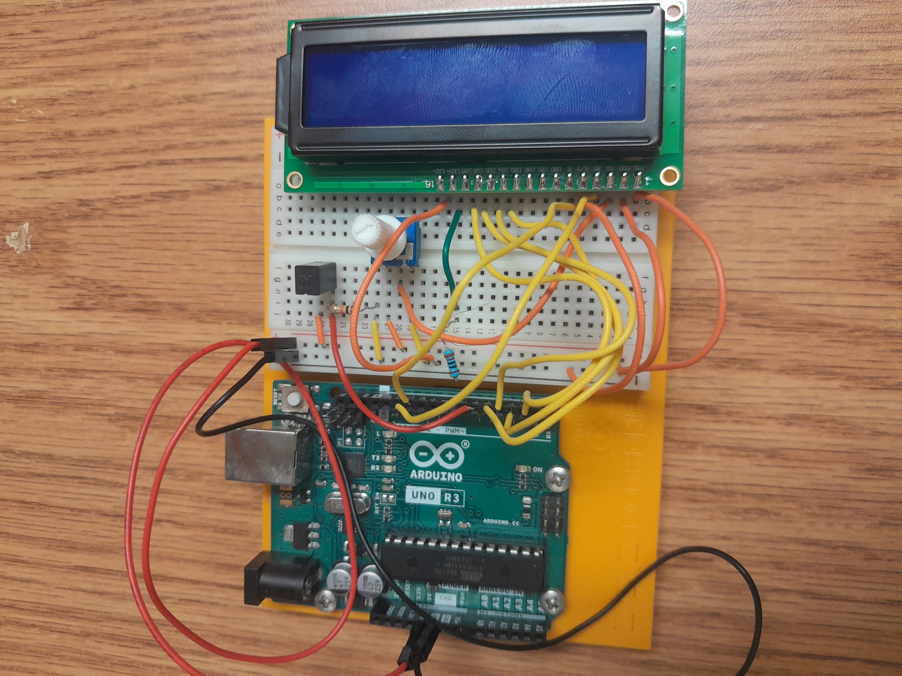

Project title - Spaceship Interface

Green Light stays on until the button is hit
which causes the red lights to alternate while
the green light turns off.
Project title - Heat Sensor

Once the heat sensor detects heat more lights will
continue to light up the higher the
temperature.
Project title - Color Mixing Lamp

The LED emits different colors based on the input
of different types of light from the light
sensors
Project title - Mood Cue

The dial changes the direction of the servo
to point at different areas on a chart.
Project title - Light Theremin

The piezo plays a different pitch based on
the
amount of light exposed to the light sensor
mimicking a theremin.
Project title - Keyboard Instrument

The buttons cause the piezo to play different tunes
and overall mimic a very simple piano.
Project title - Digital Hourglass

The LEDs light up, one every ten minutes
up to
an hour so long as the tilt sensor detects
it
not right side up.
Project title - Motorized Pinwheel

A design is attached to the motor so that when
the button is pressed it spins fast enough to create
a different repeating design.
Project title - Zoetrope

A group of still images is created then spun by the
motor to create something similar to animation.
Project title - Crystal Ball

The tilt sensor is set to activate the programming
and randomly display text on the screen from a
list of responses.
Project title - Knock Lock

The piezo acts as a noise sensor and moves the servo
when conditions are met in this case its the correct
number of valid noises.